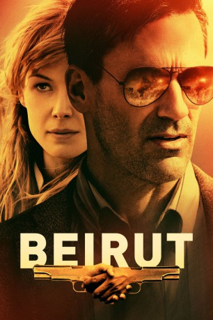

#11450 Beirut
 
 IMDB-Wertung: 6.4 / 10
IMDB-Wertung: 6.4 / 10  Tomatometer: 82
Tomatometer: 82  Metascore: 69
Metascore: 69 
Mason Skiles lebt 1972 als Diplomat in der libanesischen Hauptstadt Beirut. Beklagen kann er sich nicht: Mittlerweile ist er sesshaft geworden und hat die schöne Nadia geheiratet und den 13-jährigen Karim unter seiner Obhut. Doch als die CIA eines Tages auftaucht, ändert sich mit einem Mal alles, denn bei Karim soll eine Verbindung zum Attentat bei den Olympischen Spielen in München bestehen… Zehn Jahre später hat Mason dem im Bürgerkrieg versunkenen Beirut längst den Rücken gekehrt und führt ein gewöhnliches Leben als Broker in den USA. Mit seiner Vergangenheit will der mittlerweile Alkoholabhängige nichts mehr am Hut haben, doch diese holt Mason eines Tages wieder ein: Die Regierung beauftragt nämlich Mason, wieder in den Dienst zu gehen und nach Beirut zu reisen. Dort soll er einen riskanten Gefangenenaustausch vollziehen, da ein amerikanischer Spion entführt wurde.
Jahr: 2018
Dauer: 110 Minuten
FSK: 12
Land: USA Studio: Bleecker Street MediaTonspuren: DD5.1 - ,
Untertitel: Deutsch, Englisch,
Auflösung: 1080p (1920x808) Größe: 9246 MB
Genre: Thriller, Drama
Regisseur: Brad Anderson
Drehbuch: Tony Gilroy
Soundtrack: John Debney
Darsteller:
 Jon Hamm als Mason Skiles
Jon Hamm als Mason Skiles- Jay Potter als Congressman
 Leïla Bekhti als Nadia Skiles
Leïla Bekhti als Nadia Skiles Kate Fleetwood als Alice Riley
Kate Fleetwood als Alice Riley Mark Pellegrino als Cal Riley
Mark Pellegrino als Cal Riley Colin Stinton als Mr. Jones
Colin Stinton als Mr. Jones Ian Porter als Jerry
Ian Porter als Jerry Nick Holder als Dennis
Nick Holder als Dennis Neal Huff als Ernie
Neal Huff als Ernie Shea Whigham als Gary Ruzak
Shea Whigham als Gary Ruzak Douglas Hodge als Sully
Douglas Hodge als Sully- Nora Garrett als Waitress
 Rosamund Pike als Sandy Crowder
Rosamund Pike als Sandy Crowder Dean Norris als Donald Gaines
Dean Norris als Donald Gaines Larry Pine als Frank Whalen
Larry Pine als Frank Whalen Jonny Coyne als Bernard Teppler
Jonny Coyne als Bernard Teppler- Mohamed Zouaoui als Fahmy
- Idir Chender als Karim
 Alon Aboutboul als Roni Niv
Alon Aboutboul als Roni Niv- Brahim Rachiki als Sentry Guard
 Nicholas Woodeson als Herzberg
Nicholas Woodeson als Herzberg- Sonia Okacha als Sandrine
- Ben Affan als Jassim / Rami (uncredited)
- Anton Obeid als Embassy Guest / Nightclub Patron / Driver on Blocked Street (uncredited)
 Ronald Reagan als Himself (archive footage) (uncredited)
Ronald Reagan als Himself (archive footage) (uncredited)- Khalid Benchagra als Nadim
- Ania Josse als Partygoer #1
- Angus John Crisford Pritchard-Gordon als Partygoer #2
- Yoav Sadian als Karim (13 Years Old)
- Abdesselam Bounouacha als Partygoer #3
- Mustapha Touki als Gunman
- Youssef El Hibaqui als Gunman
- Aziz Attougui als Gunman
- Hichame Ouraqa als Abu Rajal
- Charley Broderick als Boston Cop
- Steven P. Saeta als Situation Room Suit
- Richard De Mayo als Cowboy
- Anas El Akil als Mercedes Driver
- Zineb Srairi als Lounge Singer
- Ahmed Said Arif als Bashir
- Charaf Ben Affan als Rami
- Abdellah Chakiri als Hussein
- Mamoun Aouzal als Boy
- Majid Essaidi als Student
- Max Kleinveld als Van Tech
- Chaimae Ben Acha als Co-Ed
- Josh Saeta als Comm Boss
- Mohammed Tabit Ben Slimane als Scrawny Taxi Driver
- Mohamed Yadder als SEAL
- Mohamed Attougui als Raffik
Datei: X:\2018(A-F)\Beirut (2018, FSK12, 1920x808).mkv seit 09.07.2019
Festplatte: HD 2017(A-Z)-2018(A-F)
 Es gibt insgesamt 151 Filme in der Gruppe '2018(A-F)'
Es gibt insgesamt 151 Filme in der Gruppe '2018(A-F)'